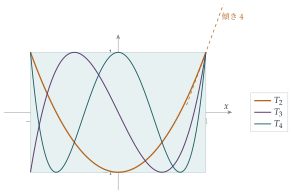

STEP I 1988、第7問
先に進む前に問題を読んでおこう。問題は STEP Support Programme の問題データベースにある： step.maths.org/questions/88-s1-q7
導入
ある区間で関数の値が \(-1\) と \(1\) の間にとどまることがわかっているとき、その関数の傾きの大きさについて何かいえるだろうか。一般の関数については、何もいえない。\(\sin(1000x)\) は \(-1\) と \(1\) の間にとどまるが、傾きは \(1000\) にもなる。しかし2次関数（quadratic）はそのように激しく振動することはできない。この問題は、箱 \(|x| \leq 1\), \(|y| \leq 1\) に閉じ込められた2次関数は箱の内部で傾きが \(4\) を超えることはなく、しかも \(4\) が最良の値であることを示すものである。
この問題には意外な由来がある。1887年、周期表（periodic table）で有名な化学者メンデレーエフ（Dmitri Mendeleev）は、溶液の密度が濃度にどのように依存するかを研究しており、データに2次関数を当てはめていた。彼はデータの誤差が曲線の傾きにどれほど悪影響を及ぼしうるかを知る必要があり、まさにこの問題の結果を証明した。その2年後、若きマルコフ（Andrei Markov）が任意の次数の多項式（polynomial）について一般の問題を解決し、その答えは数学において最も重要な多項式のいくつかへとまっすぐにつながっていった。
取りかかる前に
\(\mathrm{f}'(x)\) の公式は、\(\mathrm{f}\) の3つの値、すなわち \(-1\), \(0\), \(1\) における値しか用いていない。なぜ3つの値だけで2次関数の導関数（derivative）が決まるのだろうか。
2次関数は3つの係数をもつので、任意の3点における値によって決まる。したがって、その導関数も係数の関数であるから、それら3つの値によって表せるはずである。公式はその表し方を教えてくれる。そしてこれこそが必要なものである。というのも、仮定 \(|\mathrm{f}(x)| \leq 1\) は \(\mathrm{f}\) の値についての情報を与える一方で、結論はその導関数についてのものだからである。
順を追って解く
段階 1 公式
\(\mathrm{f}(1) = a + b + c\)、\(\mathrm{f}(-1) = a - b + c\)、\(\mathrm{f}(0) = c\) である。よって右辺は \[(a + b + c)\left(x + \tfrac12\right) + (a - b + c)\left(x - \tfrac12\right) - 2cx\] となる。\(x\) の係数は \((a + b + c) + (a - b + c) - 2c = 2a\) であり、定数項は \(\frac12(a + b + c) - \frac12(a - b + c) = b\) である。よって右辺は \(2ax + b = \mathrm{f}'(x)\) である。■
段階 2 上界
公式の両辺の絶対値をとり、三角不等式と \(|\mathrm{f}(1)|, |\mathrm{f}(-1)|, |\mathrm{f}(0)| \leq 1\) を用いよ。\(|\mathrm{f}'(x)|\) に対して、\(x\) の関数としてどのような上界が得られるか。
三角不等式（triangle inequality）\(|u + v + w| \leq |u| + |v| + |w|\) により、 \[|\mathrm{f}'(x)| \leq |\mathrm{f}(1)|\,\bigl|x + \tfrac12\bigr| + |\mathrm{f}(-1)|\,\bigl|x - \tfrac12\bigr| + 2|\mathrm{f}(0)|\,|x| \leq \bigl|x + \tfrac12\bigr| + \bigl|x - \tfrac12\bigr| + 2|x|.\]
\(|x| \leq 1\) のとき \(\bigl|x + \tfrac12\bigr| + \bigl|x - \tfrac12\bigr| + 2|x| \leq 4\) であることを示せ。（符号に応じて場合分けせよ。）
\(|x| \leq \frac12\) ならば、\(x + \frac12 \geq 0\) かつ \(x - \frac12 \leq 0\) であるから \(\bigl|x + \tfrac12\bigr| + \bigl|x - \tfrac12\bigr| = (x + \tfrac12) - (x - \tfrac12) = 1\) となり、合計は \(1 + 2|x| \leq 2\) である。
\(\frac12 \leq |x| \leq 1\) ならば、2つの括弧の中身はどちらも \(x\) と同じ符号をもつので \(\bigl|x + \tfrac12\bigr| + \bigl|x - \tfrac12\bigr| = 2|x|\) となり、合計は \(4|x| \leq 4\) である。
いずれの場合も \(|\mathrm{f}'(x)| \leq 4\) である。■
この上界が達成されるのは \(x = \pm1\) においてのみである。区間の中央の半分では、傾きは高々 \(2\) である。
段階 3 極端な例
\(x = 1\) で上界が達成されるためには、段階 2 のすべての不等式で等号が成り立たなければならない。\(\mathrm{f}(1)\)、\(\mathrm{f}(-1)\)、\(\mathrm{f}(0)\) はどのような値をとり、それぞれどの符号でなければならないか。
\(x = 1\) では、公式は \(\mathrm{f}'(1) = \frac32\mathrm{f}(1) + \frac12\mathrm{f}(-1) - 2\mathrm{f}(0)\) となる。これを \(4\) に等しくするには、\(\mathrm{f}(1) = 1\)、\(\mathrm{f}(-1) = 1\)、\(\mathrm{f}(0) = -1\) でなければならない。\((-1, 1)\)、\((0, -1)\)、\((1, 1)\) を通る2次関数は \[\mathrm{f}(x) = 2x^2 - 1\] であるから、\(a = 2\), \(b = 0\), \(c = -1\) である。\(|x| \leq 1\) において \(x^2 \in [0, 1]\) であるから \(2x^2 - 1 \in [-1, 1]\) であり、さらに \(\mathrm{f}'(1) = 4\) である。■
振り返り
求めたいものを、わかっているもので表す。 公式は導関数を \(\mathrm{f}\) の値で書き直した。仮定が情報を与えていたのはまさにその値である。
三角不等式。 和を絶対値の和で上から抑えるのは、解析学で最もよく使われる手法の一つである。
等号成立条件から極値的な場合を見つける。 すべての不等式で等号が成り立つのはいつかを問うことで、例 \(2x^2 - 1\) が直接得られた。
背後にある数学
マルコフは1889年に、\(p\) が \(n\) 次の多項式で \([-1, 1]\) 上で \(|p(x)| \leq 1\) を満たすならば \[|p'(x)| \leq n^2 \qquad\text{ただし } |x| \leq 1\] であることを証明した。\(n = 2\) の場合、これは我々の上界 \(4\) である。極端な場合を与えるのは、 \[T_n(\cos\theta) = \cos n\theta.\] によって定義されるチェビシェフ多項式（Chebyshev polynomials）\(T_n\) である。たとえば \(\cos 2\theta = 2\cos^2\theta - 1\) から我々の極端な2次関数 \(T_2(x) = 2x^2 - 1\) が得られ、\(\cos 3\theta = 4\cos^3\theta - 3\cos\theta\) から \(T_3(x) = 4x^3 - 3x\) が得られる。\(T_n(x) = \cos n\theta\) であるから、これらの多項式は \(n\) 次の多項式に可能な限り多く \(-1\) と \(1\) の間を振動し、両端では可能な限り急な傾きをもつ（図 3.6.1）。マルコフの弟ウラジーミル（Vladimir）は、1892年にこの結果を高階導関数へと拡張した。

補間
問題の公式はラグランジュ補間（Lagrange interpolation）の一例である。いくつかの点における関数の値が与えられたとき、それらを通る次数最小のただ一つの多項式を書き下し、それを用いて関数やその導関数を近似するのである。ここでは3点は \(-1, 0, 1\) である。このような公式は数値解析（numerical analysis）のあらゆる場面で用いられており、たとえば測定データから導関数を推定するのに使われる。マルコフの不等式は、それに付随する警告である。すなわち、値のわずかな誤差が導関数では最大 \(n^2\) 倍にまで拡大されうるのであり、これはまさにメンデレーエフが懸念していた問題である。
実用におけるチェビシェフ多項式
チェビシェフ多項式は近似理論（approximation theory）の主力となる道具である。等間隔の点ではなく \(T_n\) の根において関数を補間すると、誤差を抑えることができる。等間隔の点を用いると、高次の補間は区間の両端付近でとんでもなく大きく外れることがある（ルンゲ（Runge）現象）。関数をマシン精度いっぱいまで計算したり、微分方程式を非常に高い精度で解いたりするソフトウェアは、内部でチェビシェフ展開を用いていることが多い。
思考のスキル
仮定がある種類の量について述べ、結論が別の種類の量についてのものであるときは、両者を結びつける恒等式を探し、各項ごとに上から抑えよ。
そして上界が得られたら、それが最良かどうかを問え。等号成立の場合を逆にたどると、たいていは極端な例にたどり着く。そしてその極端な例は、それ自体として興味深いことが多い。
次の一歩
一般的な考え方。 \(\mathrm{f}\) が2次関数ならば \(\mathrm{f}(x) = \mathrm{f}(-1)\dfrac{x(x-1)}{2} + \mathrm{f}(0)(1 - x^2) + \mathrm{f}(1)\dfrac{x(x+1)}{2}\) であることを示し、これを微分して問題の公式を導け。
一意性。 発展 \([-1, 1]\) 上で \(|\mathrm{f}(x)| \leq 1\) を満たし、かつ \([-1, 1]\) のどこかで \(|\mathrm{f}'(x)| = 4\) となる2次関数は \(\pm(2x^2 - 1)\) に限ることを示せ。
チェビシェフ多項式。 \(\cos 3\theta = 4\cos^3\theta - 3\cos\theta\) を用いて \(T_3(x) = 4x^3 - 3x\) であることを確かめ、\(T_3'(1) = 9\) を確認せよ。また \(T_{n+1}(x) = 2xT_n(x) - T_{n-1}(x)\) を示し、\(T_4\) を求めよ。
\(T_n\) の傾き。 \(T_n(\cos\theta) = \cos n\theta\) を \(\theta\) について微分することにより \(T_n'(\cos\theta) = \dfrac{n\sin n\theta}{\sin\theta}\) を示し、\(\theta \to 0\) とすることで \(T_n'(1) = n^2\) を導け。
さらに学ぶために
Lloyd N. Trefethen, Approximation Theory and Approximation Practice（SIAM）。チェビシェフ多項式と補間についての美しい現代的な本で、優秀な高校生でも読むことができ、全編にわたってコンピュータによる実験が盛り込まれている。
Peter Borwein & Tamás Erdélyi, Polynomials and Polynomial Inequalities（Springer）。マルコフの不等式とその仲間たちの全体像を知るための本。上級者向け。
George M. Phillips, Interpolation and Approximation by Polynomials（Springer）。ラグランジュ補間、チェビシェフ多項式、マルコフ型の不等式を扱う大学学部向けの教科書。